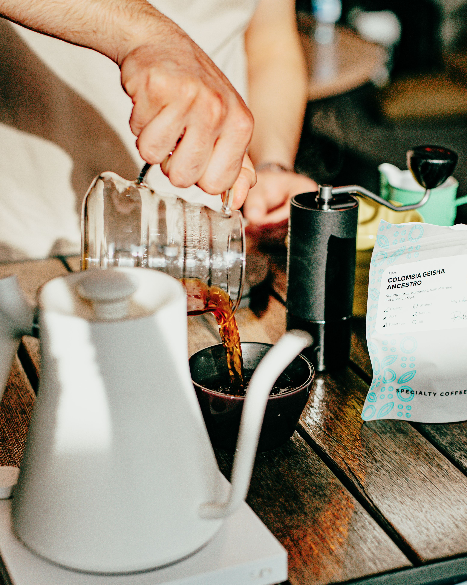
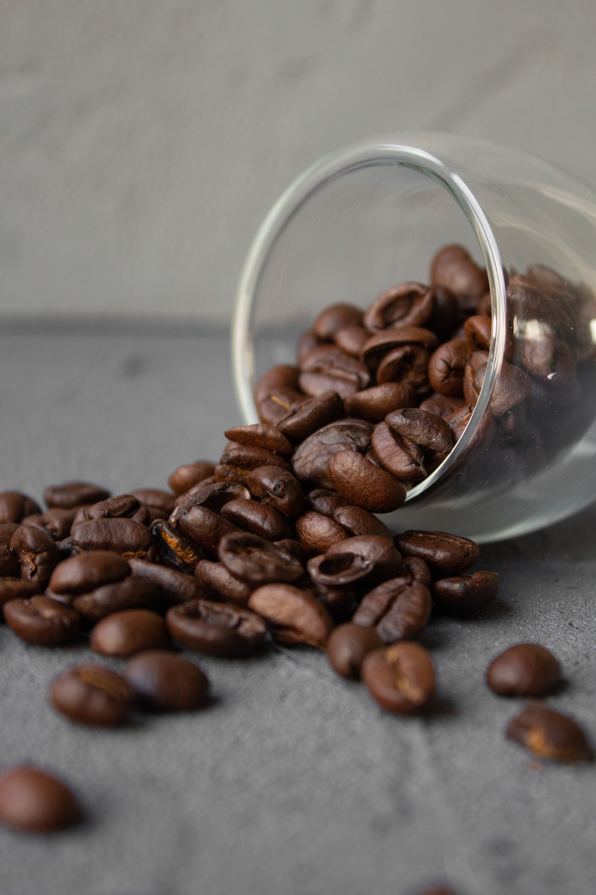

História

Uma história que começa na Etiópia
Segundo a lenda, o café foi descoberto por volta do ano 800, por um pastor chamado Kaldi, nas montanhas da Etiópia. Ele percebeu que suas cabras ficavam agitadas e cheias de energia depois de comer os frutos vermelhos de um certo arbusto. Curioso, experimentou também, e o resto é história.
Mais do que lenda, sabemos que o café era cultivado no Iêmen a partir do século XV, onde monges sufis o utilizavam para se manterem acordados durante as orações noturnas. De lá, a bebida se espalhou pelo mundo árabe, chegando a Meca, Cairo e Constantinopla.
No século XVII, o café chegou à Europa e conquistou as elites. Surgiram as primeiras cafeterias, que viraram pontos de encontro para artistas, filósofos e comerciantes. Em pouco tempo, a bebida se tornou uma das mercadorias mais valiosas do mundo.
O café chega ao Brasil
O café chegou ao Brasil em 1727, trazido ao Pará por Francisco de Melo Palheta. A planta encontrou aqui solo, clima e altitude ideais, e se espalhou rapidamente pelo país. No século XIX, o café se tornou um dos principais motores da economia brasileira.
Hoje, o Brasil é o maior produtor de café do mundo, posição que mantém há mais de 150 anos, e um dos maiores consumidores também.
Linha do tempo
- ~800: Lenda de Kaldi, na Etiópia
- Séc. XV: Cultivo e preparo da bebida no Iêmen
- Séc. XVII: O café chega à Europa
- 1727: Primeiras mudas chegam ao Brasil
- Séc. XIX: O Brasil se torna o maior produtor mundial
Conheça o grão
Todo café nasce de uma planta do gênero Coffea. O que chamamos de "grão" é, na verdade, a semente de um fruto chamado cereja, que fica vermelho quando está maduro. Duas espécies dominam o mercado mundial:

Arábica
Responsável pela maior parte do café produzido no mundo. Cresce em altitudes elevadas, tem sabor mais doce e complexo, com boa acidez e notas que podem lembrar frutas, chocolate, caramelo e flores. É a base da maioria dos cafés especiais.
Robusta (Conilon)
Mais resistente e fácil de cultivar, cresce em altitudes menores. Tem corpo mais intenso, sabor mais amargo e maior teor de cafeína. É muito usado em blends e cafés espressos pela crema que proporciona.
Variedades
Dentro de cada espécie existem diversas variedades, cada uma com características próprias de sabor, produtividade e adaptação ao clima. Algumas das mais conhecidas são:
- Bourbon: doce e delicado, com boa complexidade
- Typica: uma das variedades mais antigas, de xícara limpa e suave
- Catuaí: muito cultivada no Brasil, equilibrada e produtiva
- Mundo Novo: nascida no Brasil, robusta e de sabor encorpado
- Geisha: rara e valorizada, com notas florais e aroma marcante
O processamento faz diferença
Depois da colheita, o fruto precisa ser processado para chegar ao grão que conhecemos. O método escolhido influencia muito o sabor final:
- Natural: o fruto seca inteiro, com casca e polpa. Resulta em cafés mais doces, encorpados e frutados.
- Lavado: a polpa é removida antes da secagem. Resulta em cafés mais limpos, com acidez brilhante.
- Honey (cereja descascada): parte da polpa permanece durante a secagem. Resulta em um meio-termo, doce e equilibrado.
A arte da torra
O café cru é verde e quase sem aroma. É na torra que a mágica acontece: o calor transforma o grão e cria novos compostos de sabor e aroma. Poucos minutos a mais ou a menos no torrador mudam completamente a xícara.
Torra clara
Grão de cor mais clara e sem óleo na superfície. Preserva as características originais do café, com acidez marcante e notas frutadas e florais. Ideal para métodos de filtrado, como V60 e Chemex.
Torra média
O equilíbrio entre acidez, doçura e corpo. Aparecem notas de caramelo, chocolate e castanhas. É a mais versátil, ótima para coador, prensa francesa e espresso.
Torra escura
Grão marrom-escuro, muitas vezes brilhante por causa dos óleos. Tem corpo intenso, baixa acidez e sabor mais amargo, com notas de chocolate amargo e tostado. Muito usada no espresso tradicional.
Torra escura não significa café mais forte. A "força" depende da quantidade de café e do preparo, não da cor do grão.
Dica de ouro
O café é melhor nas semanas seguintes à torra. Prefira comprar grãos inteiros, guarde-os em local fresco, seco e longe da luz, e moa só na hora de preparar. A diferença no aroma e no sabor é enorme.
O que são cafés especiais?
Cafés especiais se destacam pela qualidade, desde o cultivo até a xícara. Tradicionalmente, essa classificação era associada a cafés com 80 pontos ou mais em uma escala de 100. Hoje, a SCA também utiliza o Coffee Value Assessment (CVA), que considera características físicas e sensoriais, preferências e informações como origem e processamento. Saiba mais sobre a avaliação da SCA.
O que é avaliado?
- Aroma
- Sabor
- Acidez
- Corpo
- Doçura
- Finalização (retrogosto)
- Equilíbrio
- Ausência de defeitos
Mais do que sabor
Por trás de um café especial existe um cuidado enorme: colheita seletiva, só dos frutos maduros, processamento cuidadoso, secagem controlada e torra feita para valorizar as características do grão. Em muitos casos, é possível saber a fazenda, a altitude, a variedade e até o produtor responsável, a chamada rastreabilidade.
Isso também significa uma relação mais justa com quem planta. Cafés especiais costumam remunerar melhor o produtor, incentivando práticas mais sustentáveis e a valorização do trabalho no campo.
Como começar a provar
Experimente cafés de origens diferentes e repare nas notas: um café da Etiópia pode lembrar flores e frutas cítricas, enquanto um do Cerrado mineiro tende a trazer chocolate e castanhas. Beba sem açúcar, pelo menos na primeira vez, e deixe o grão mostrar o que tem a dizer.